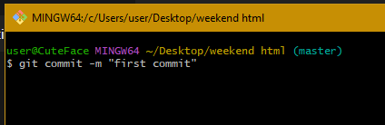

Everyday Git
What is Git
Git is a distributed version control system (DVCS) designed to track changes in files and coordinate work among multiple developers on a project. Created by Linus Torvalds in 2005, Git has become the standard tool for version control in software development due to its speed, efficiency, and robust branching
A version control system (VCS) is a software tool that enables developers to manage changes to their codebase systematically. It tracks modifications made to files over time, allowing developers to collaborate effectively, maintain a coherent history of their project, and manage different versions of their code. Version control systems offer several key features:
Installing Git
Installing Git is a straightforward process, and it can be done on various operating systems including Windows, macOS, and Linux. Here's a step-by-step guide for each
- Download Git Installer:
Visit the official Git website at https://git-scm.com/ and download the latest version of Git for Windows
- Run the Installer:
Once the download is complete, run the Git installer (.exe file) that you downloaded
- Setup Wizard:
Follow the instructions in the setup wizard. You can generally accept the default settings unless you have specific preferences to customize.
- Choose Components:
During the installation process, you'll have the option to choose which components to install. Make sure "Git Bash Here" is selected if you want to use Git from the command line.
- Adjusting Your PATH Environment:
When prompted, choose the default option "Use Git from the Windows Command Prompt" to add Git to your PATH environment, which allows you to use Git from the command line.
- Complete Installation:
Once the installation is complete, click "Finish" to exit the setup wizard.
- Verify Installation:
Open Command Prompt and type git --version. If Git is installed correctly, you should see the version number displayed.

configuring Git
Configuring Git is an essential step before you start using it. You need to set up your name and email address, which will be associated with your commits. Here's how you can configure Git:

Intializing a git repository
A Git repository, often referred to as a "repo," is a directory or folder that contains all the files and version history for a project.
It serves as a central location where developers can store, collaborate on, and manage the codebase using Git's version control features.

After running the git init command, Git will create the ".git" directory in your project directory. You can verify that the repository was initialized successfully by checking for the presence of the ".git" directory using the ls -a command.
Adding files to the staging area
Adding files to the staging area is a crucial step in the Git workflow. Before committing changes to the repository, you typically stage the modified files that you want to include in the next commit. The staging area, also known as the "index," acts as a middle ground between your working directory and the repository. It's where you prepare changes to be committed.
Understanding the Staging Area:
When you make changes to files in your working directory, Git recognizes them as either tracked or untracked:
- Tracked Files: These are files that Git is aware of because they were part of the previous commit or have been added to the staging area at some point. Git tracks changes to these files and includes them in the version history.
- Untracked Files: These are files that Git is not currently tracking. They exist in your working directory but have not been added to the staging area or committed to the repository. Git ignores untracked files unless you explicitly tell it to track them.
Adding files to the staging area
To add files to the staging area, you use the git add command followed by the names of the files you want to stage
- Check Status:
Before adding files to the staging area, it's a good practice to check the status of your repository using the git status command. This command displays which files have been modified and which files are currently staged or unstaged.

- Add Files to Staging Area:
Once you've made changes to your files and are ready to commit them, use the git add command to stage specific files or directories. You can specify individual files or use wildcards to stage multiple files at once.

Commiting changes
- Stage Changes:
Before committing, you need to stage the changes you want to include in the commit. Use the git add command to add files to the staging area, as discussed in the previous section
- Commit Changes:
Once you've staged your changes, you're ready to commit them to the repository. Use the git commit command followed by the -m flag to include a commit message in quotes. Write a concise and descriptive message that explains the purpose of the commit and the changes being introduced.

Writting good commit message
Writing good commit messages is essential for maintaining a clear and informative commit history. Here are some tips for writing effective commit messages
- Be Descriptive: Provide a clear and concise summary of the changes being introduced in the commit.
- Include Context: Explain why the changes are necessary and provide any relevant background information.
- Use Imperative Mood: Write commit messages in the imperative mood (e.g., "Add feature" instead of "Added feature") for consistency and clarity.
- Keep It Short: Aim for commit messages that are no longer than 50-72 characters for the summary line. If additional context is needed, add a more detailed description in the body of the message.
View Past commit
To view past commits in your repository, you can use the git log command. This command displays a chronological list of commits, along with relevant information such as the commit hash, author, date, and commit message.

Going Back to a Particular Commit
If you need to revert to a specific commit in your project's history, you can use the git checkout command followed by the commit hash or a reference to the commit (e.g., branch name).

Branches
Branches in Git are a powerful feature that allows developers to work on different versions of a project simultaneously. Think of a branch as a separate line of development within a repository, where changes can be made independently of the main codebase. Each branch represents a distinct set of commits, providing a way to isolate work on new features, bug fixes, or experiments without affecting the stability of the main codebase.
Importance of Branches
- Isolation of Work:
Branches enable developers to work on new features or bug fixes in isolation from the main codebase. This isolation prevents changes in one branch from affecting the stability of other branches, allowing for parallel development of multiple features or fixes.
- Collaboration:
Branches facilitate collaboration among team members by providing a mechanism for concurrent work on different aspects of a project. Each developer can work on a separate branch, making independent changes without interfering with others' work. Once changes are complete, they can be merged back into the main codebase seamlessly.
- Experimentation:
Branches offer a safe space for experimentation and exploration. Developers can create branches to test new ideas, refactor code, or explore alternative solutions without impacting the main codebase. If an experiment proves successful, the changes can be integrated into the main codebase through merging.
- Feature Development:
Branches are commonly used for feature development. Each feature or enhancement can have its own branch, allowing developers to focus on implementing and testing the specific functionality without disrupting ongoing development on other features. Once a feature is complete, it can be merged into the main codebase for release.
- Bug Fixing:
Branches are also useful for addressing bugs and issues in the code. Developers can create separate branches to fix specific bugs identified in the main codebase. This approach allows for focused debugging and testing of the fix before it is integrated back into the main codebase.
Creating a branch
Checking current branch
Before creating a new branch, it's a good practice to check which branch you're currently on using the "git branch command". This command lists all existing branches in the repository and highlights the branch you're currently on

Create a New Branch
To create a new branch, use the git checkout -b command followed by the desired branch name. This command simultaneously creates a new branch and switches to it.

Viewing all branches
To see a list of all branches in the repository, you can use the git branch command below. This command lists both local and remote branches.

Switching active branches
- Available Branches:
Before switching branches, you may want to list the available branches in the repository to identify the branch you want to switch to. Use the git branch command to list all branches.
- Different Branch:
To switch to a different branch, use the git checkout command followed by the name of the branch you want to switch to.

Merging a branch
- Switch to the Target Branch:
Before merging changes from another branch, switch to the branch where you want to merge the changes. For example, if you want to merge changes from a feature branch into the main branch, switch to the main branch using the git checkout command.

- Merge Changes from Another Branch:
Once you're on the target branch, you can merge changes from another branch using the git merge command followed by the name of the branch you want to merge.

- Verify Merge:
After merging, you can use the git log command to verify that the changes from the merged branch are now included in the target branch's commit history.

Deleting a Branch
- List Available Branches:
Before deleting a branch, you may want to list the available branches in the repository to confirm the branch you want to delete. Use the git branch command to list all branches.

- Delete the Branch:
To delete a branch, use the git branch -d command followed by the name of the branch you want to delete.

Deleting branches in Git allows you to clean up your repository and remove branches that are no longer needed. By mastering the git branch -d or git branch -D command, you can effectively manage your repository's branch history and keep it organized.
After learning the basics of Git, the next steps for users could involve exploring more advanced Git concepts and tools to enhance their proficiency and productivity in version control and collaboration.
- Branching Strategies: Dive deeper into branching strategies such as GitFlow, Feature Branch Workflow, or GitHub Flow. Understanding how to effectively use branches and manage branch workflows can streamline development processes and improve collaboration within teams.
- Merge Strategies: Learn about different merge strategies such as merge commits, rebasing, and squashing commits. Understanding when and how to use each merge strategy can help maintain a clean and organized commit history.